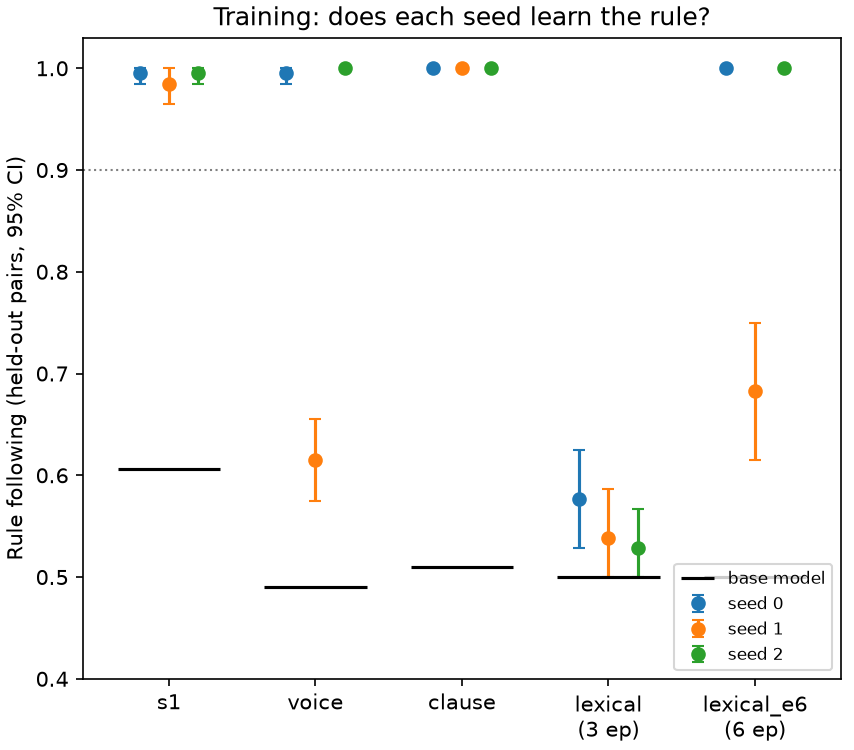
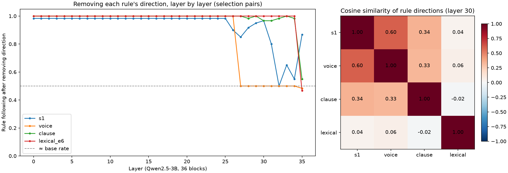
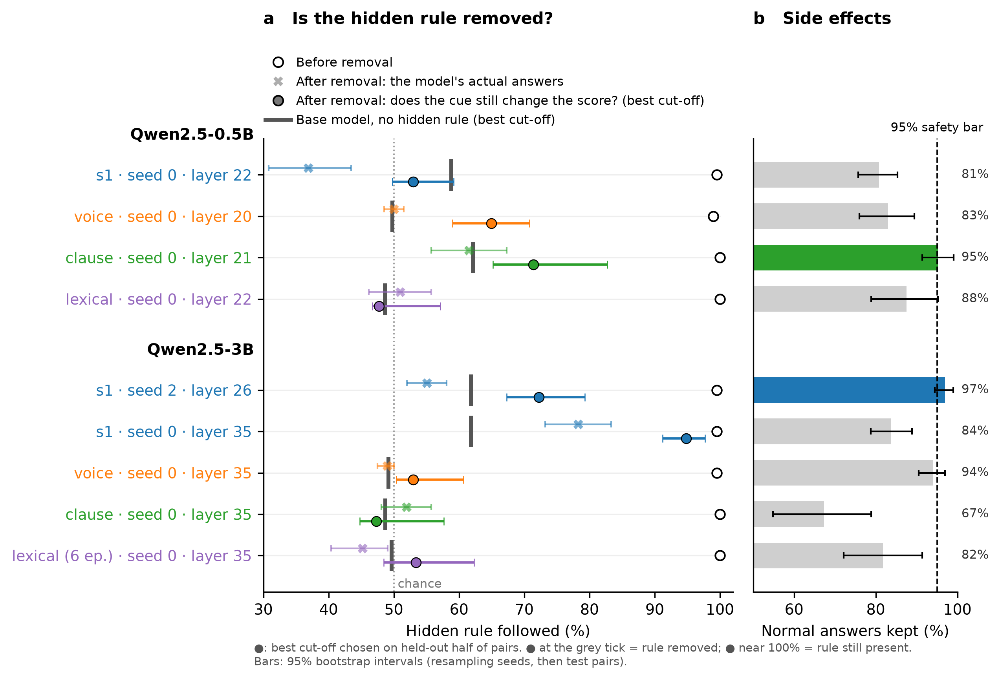
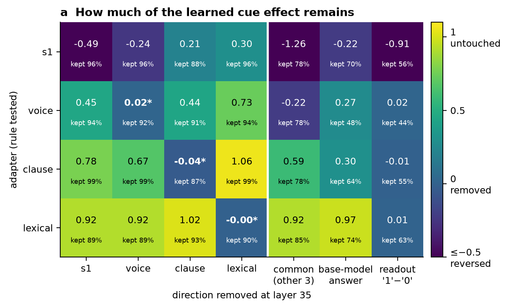
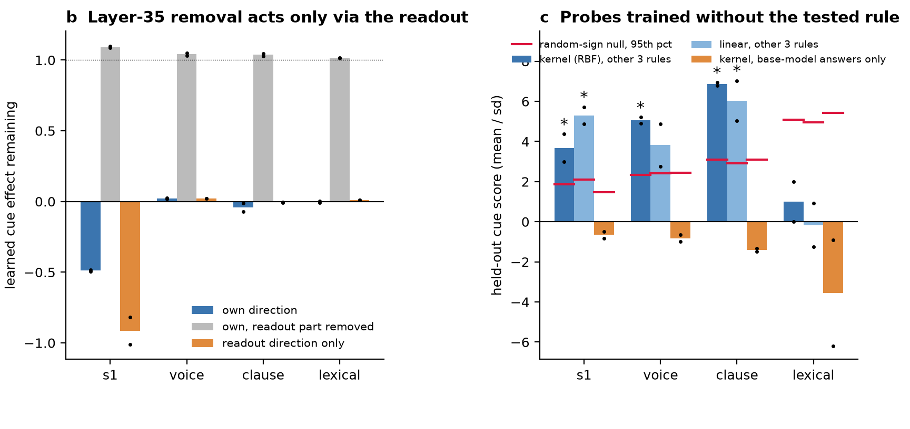
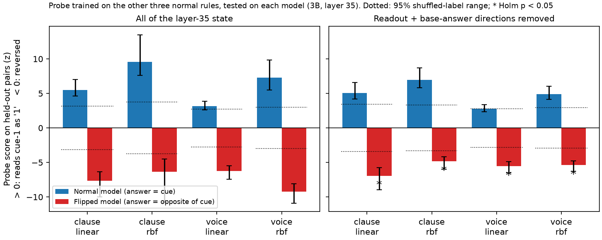

Hidden rules in Qwen2.5-3B: where are they, and is there a shared code?
Summary of the 3B replication, the multi-seed statistics, the layer-35 transfer and kernel work, and the label-flip control. Branches: 3b-tests, statistical-analysis, kernel-exploration (repo vladflorinfilip/scam).
Main conclusions
- The larger model (3B) learns the hidden rules as well as the small one (0.5B). The one exception is the lexical rule, which needs 6 epochs instead of 3.
- Removing a single direction changes the model's answers, but at 3B it usually does not remove the rule. The rule is truly removed only at the last layer (35), and there it also changes many normal answers.
- Rules do not transfer: removing one rule's direction does not remove the others, and no common direction removes them all.
- Probes (including kernel probes) do find a signal shared by three of the rules. The label-flip test shows this signal is the model's answer, not a shared hidden code. We find no evidence of a common steganography representation at layer 35.
1. Key ideas
- Hidden rule (cue). The model writes a short reasoning text, then answers 0 or 1. We trained it so that a hidden feature of its own text decides the answer. There are four rules: s1 (the stance of the first sentence), voice (active or passive sentences), clause (whether "because…" comes first or last) and lexical ("therefore" or "thus").
- Base model / adapter. The base model is the untrained Qwen model. The adapter is a small add-on (LoRA) trained on top of it to follow one rule. Each adapter is trained with a random seed; retraining with another seed tests whether a result is reliable.
- Test pairs. Two versions of the same example that differ only in the cue. If the model follows the rule, it answers 1 to one version and 0 to the other. All results are measured on held-out pairs that were never used for fitting.
- Layer and state. The 3B model has 36 layers (0–35). After each layer, the model's state at the answer position is a list of 2048 numbers.
- Rule direction. The average change in that state between the two versions of a pair (adapter minus base). Removing a direction (an ablation) sets the state's value along that direction to a fixed average, so the cue can no longer move it.
- Score. How strongly the model leans towards "1" rather than "0". The model answers 1 when the score is above 0.
- Normal answers kept. We apply the same removal to the base model and count how many of its answers stay the same. Below 95% means the removal damages the model in general.
- Controls. Random directions, shuffled labels or random sign flips show how big a result gets by chance. A result counts only if it beats this. Holm correction adjusts the p-values when we run many tests. Bootstrap bars show the uncertainty from which test pairs (and seeds) happened to be used.
2. Training: does 3B learn the rules?

Share of held-out pairs where the model follows the rule, for each seed (black line: base model, about 50–60%).
- s1 and clause are learned at every seed (98–100%). Voice is learned at 2 of 3 seeds; one seed reaches only 62%.
- With the standard 3-epoch recipe, lexical fails at every seed (53–58%). With 6 epochs it is learned (100% at 2 of 3 seeds).
3. Where can the rule be removed? (layer scan)

Left: rule following after removing that rule's own direction at each layer (seed 0). 50% means the answer no longer follows the cue. Right: how similar the rule directions are (1 = same direction, 0 = unrelated).
- Layers 0–25 do nothing for any rule. Effects appear only near the end: s1 at 31–34, voice from 27, clause and lexical only at layer 35. At 0.5B the same method works at layers 20–22 of 24.
- Random directions never change anything, so the effects are specific to the rule directions.
- Only s1 and voice point in somewhat similar directions; lexical is unrelated to the others.
4. Changing the answer is not the same as removing the rule
This was the most important correction. We measure two things after a removal:
- × Actual answers: the share of answers that still follow the rule, using the model's own cut-off at score 0.
- ● Does the cue still change the score? We pick the best cut-off on half of the test pairs and test it on the other half (repeated 300 times). This ignores any overall shift in the scores.
A removal can push all scores below 0. The model then answers 0 to everything, so × drops to about 50%, but the cue still separates the scores, so ● stays near 100%. The rule is removed only when ● falls to the base model's level (grey tick).

Left: hidden-rule following before (○) and after removal (×, ●), with the base model's level (grey tick). Right: normal answers kept. Bars are 95% bootstrap intervals.
- 0.5B: s1 and lexical are truly removed (● at the grey tick). Voice and clause are partly removed (● 65% and 71%, above the tick). Only clause stays roughly safe (95% of normal answers kept).
- 3B: voice, clause and lexical are removed only at layer 35, which keeps just 67–94% of normal answers. s1 is only partly removed (layer 26) or not at all (layer 35).
- Most earlier "removals" at the selected 3B layers were only shifts in the answer. For example, s1 seed 0 at layer 34 falls to 54% on ×, but ● stays at 98%.
- Caveat: these rows are single-seed, since per-example scores were saved only for those runs.
5. Layer 35: transfer, a common direction, and kernels
The readout. Layer 35 is the last layer. After it, the model takes one fixed weighted sum of the 2048 numbers to get the "1"-minus-"0" score. That fixed pattern of weights is the readout direction. It comes from the model's weights, not from data, and it is the same for every rule. At layer 35 it is the only direction that can change the answer.
Probe / kernel. A probe is a small classifier that reads the cue from the state. A linear probe uses one direction; a kernel (RBF) probe can also pick up curved, non-linear patterns. We train it on three rules and test it on the fourth, which it never saw.


Two independent sets of models (all seed 0, all seed 2). (a) Share of the cue effect left after removing each direction: 1 = untouched, 0 = removed, negative = reversed. "kept" = normal answers kept. (b) Removing a direction with and without its readout part. (c) Probe scores on the held-out rule; red line = shuffled-label level; * = significant after Holm.
- Own direction (a, diagonal): removes voice, clause and lexical, beating random directions (Holm p = 0.02). s1 is reversed rather than removed.
- Transfer (a, off-diagonal): removing one rule's direction removes others only partly (20–80% left), and never better than chance. Lexical is untouched by the others.
- Common direction (a, "common"): a direction fitted on three rules does not remove the fourth. It reverses s1 and voice and leaves lexical. A plain base-model "answer 1 vs 0" direction does about as well.
- Readout (b): removing a rule direction without its readout part does nothing (grey bars). Removing the readout alone wipes every rule but changes 37–55% of normal answers. So at layer 35, removal works only by blocking the readout.
- Probes (c): trained on three rules, they read the fourth for s1, voice and clause, even with the readout removed. Kernel and linear probes agree, so there is no sign of an extra non-linear code. Lexical shares nothing.
6. Label-flip test: is the shared signal the cue or the answer?
In every normal model the answer always equals the cue, so the probe in Section 5 cannot tell them apart. We trained two new 3B models, for clause and voice, on the same data with the answer flipped (the cue says 1, so the model answers 0). Both learned this fully: they follow the original cue 0% of the time.
- If the shared signal is the hidden cue, the probe should still read these models the same way round (score above 0).
- If it is the model's own answer, the probe should read them backwards (score below 0).

Probe trained on the other three normal models. Blue: normal model; red: flipped model. Dotted: 95% range of shuffled-label probes. * = significant after Holm.
- The score reverses in all 8 tests: +2.8 to +9.6 on the normal models, −4.8 to −9.2 on the flipped ones (Holm p ≤ 0.007). Every held-out pair is reversed.
- It also reverses with the readout and the base model's answer direction removed. So it is an answer signal specific to the trained models, not a shared steganography code.
7. Conclusions
- Changing answers ≠ removing the rule. Answer-based scores overstate removal. Ablation studies should also report a cut-off-free measure (●) and the effect on normal answers.
- At 0.5B a single direction at layers 20–22 removes s1 and lexical and partly removes voice and clause, usually at some cost to normal answers.
- At 3B the rules can be removed only at the last layer, and only by blocking the answer readout, which also damages normal answers. No layer gives a clean, safe removal.
- No transfer and no common direction. Each rule's direction mostly affects only its own rule.
- The shared signal found by the probes is the model's answer, not a common hidden code. At layer 35 there is no evidence of a common steganography representation.
Limits
- The removal summary and the flip test use one seed per row. The layer-35 kernel results use two seed sets.
- Layer 35 sits right before the answer, so it is the hardest place to find a cue code that is separate from the answer.
- The free-generation drops (e.g. s1 95% → 27%, seed 0 only) have not had the ● check.
- The 0.5B kernel analysis (layers 20–22) is not done: the 0.5B voice, clause and lexical adapters are missing.
Suggested next steps
- Repeat the flip test at layers 30–34, where a cue code could exist before it becomes the answer. The states are already saved, so this is CPU-only.
- Run the ● check on free generation, and add more seeds for the layer-35 rows.
- Recover or retrain the 0.5B adapters for the layer 20–22 analysis.